|
Курсы
Регистрация
Методика
Оглавление
Для учащихся

Статьи
Инструменты
Контакты
|
Урок
14.
Платные сервисы игры
14.1.
Особые предметы (артефакты).
Что такое артефакты? Это вещи, недоступные
большинству игроков в клубе: они не продаются в кузнице за обычные игровые
деньги. Параметры артефактов значительно выигрывают перед стандартными
параметрами вещей в игре, что дает обладателю артефакта преимущество перед
остальными игроками. Артефактами может быть не только оружие, но и доспехи,
кольца и прочие предметы в игре.
Во многих он-лайн играх кроме обычных игровых
денег введены еще специальные денежные средства для покупки предметов типа
артефактов. Обычно эти деньги являются аналогом какой-то реальной валюты - евро
или доллара. Так в игре Бойцовский Клуб (www.combats.ru)
такие деньги называются еврокредами и имеют курс обмена 1
еврокред = 1 евро.
Введение особых предметов (артефактов) позволяет
создателям игры получать неплохой доход от игроков, которые могут себе позволить
покупку такого рода игровых предметов.
Кроме артефактов, в игре могут участвовать
несколько более дешевые предметы - валютные игровые предметы, которые тоже можно
купить только за еврокредиты (мы тоже будем использовать это название). Это
сделано специально, чтоб игроки, которые не могут себе позволить приобретение
дорогостоящих артефактов, тем не менее тоже могли использовать более лучшие
предметы, чем обычные, продаваемые в кузнице.
Безусловно обычный игрок может купить и
валютный предмет и артефакт за обычные игровые деньги, например у торговца в
"Торговых рядах" или "Комиссионном магазине", которые до этого выложили за них
определенную сумму в еврокредах (екр).
(Описать системы ввода денег.....)
14.2.
Валютный магазин.
Давайте создадим валютный магазин, в котором будут
продаваться валютные предметы (назовем их EURO-предметы)
и артефакты. В таком магазине могут себе позволить делать покупки только игроки
обладающие определенной суммой в екр.
Давайте создадим несколько таких предметов, для
тестирования нашего валютного магазина. Вот они:
Пояс Отваги |
Шлем Солнца |
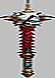
Молот Прозрения
|
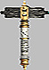
Молот Крови |

Щит Забвения
|
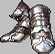
Сапоги Радуги |

Броня Возрождения
|
Предметы, возле которых стоит значок
являются
артефактами. Остальные - это EURO-предметы.
Картинки всех этих вещей Вы можете найти в папке 14_2/arts
Теперь нам
предстоит добавить эти типы предметов в нашу таблицу справочника предметов
items_list. Зделаем это
следующими SQL строками:
/* добавим несколько евро-предметов и артефактов
*/
INSERT INTO Items_List (IL_ID,ItemType,ItemNo,ItemName,Item_StateCost,Item_Image,
ItemSlotName,Item_Level,Item_FullLife,Item_Euro_Art) VALUES(18,120,1,'Молот
Крови',200,'mace_euro2.jpg','Weapon',1,100,1);
INSERT INTO Items_List (IL_ID,ItemType,ItemNo,ItemName,Item_StateCost,Item_Image,
ItemSlotName,Item_Level,Item_FullLife,Item_Euro_Art) VALUES(19,120,2,'Молот
Прозрения',520,'mace_art2.jpg','Weapon',1,200,2);
INSERT INTO Items_List (IL_ID,ItemType,ItemNo,ItemName,Item_StateCost,Item_Image,
ItemSlotName,Item_Level,Item_FullLife,Item_Euro_Art) VALUES(20,125,1,'Щит
Забвения',720,'shield_art2.jpg','Shield',1,200,2);
INSERT INTO Items_List (IL_ID,ItemType,ItemNo,ItemName,Item_StateCost,Item_Image,
ItemSlotName,Item_Level,Item_FullLife,Item_Euro_Art) VALUES(21,126,1,'Шлем
Солнца',550,'helmet_euro2.jpg','Helmet',1,100,1);
INSERT INTO Items_List (IL_ID,ItemType,ItemNo,ItemName,Item_StateCost,Item_Image,
ItemSlotName,Item_Level,Item_FullLife,Item_Euro_Art) VALUES(22,128,1,'Сапоги
Радуги',450,'shoes_euro2.jpg','Shoes',1,100,1);
INSERT INTO Items_List (IL_ID,ItemType,ItemNo,ItemName,Item_StateCost,Item_Image,
ItemSlotName,Item_Level,Item_FullLife,Item_Euro_Art) VALUES(23,129,1,'Броня
Возрождения',750,'skirt_art2.jpg','Armor',1,100,2);
INSERT INTO Items_List (IL_ID,ItemType,ItemNo,ItemName,Item_StateCost,Item_Image,
ItemSlotName,Item_Level,Item_FullLife,Item_Euro_Art) VALUES(24,130,1,'Пояс
Отваги',350,'belt_euro2.jpg','Belt',1,200,1);
|
Но
перед этим не забудьте в таблицу items_list
добавить новое поле:
| `Item_Euro_Art`
INT DEFAULT 0, /*1 - европредмет 2 - артефакт*/ |
Кроме этого, в таблице users
нужно добавить еще одно одно поле
Character_Euro
которое будет содержать сумму денег нашего персонажа в екр.
| Character_Euro FLOAT
DEFAULT 0, /* EURO креды */ |
Давайте разместим валютный магазин во второй части Центральной Площади,
описываемой файлом map2.phtml. На
HTML описание магазина выглядит так:
| <div style="position:absolute;left:470px;top:110px;width:149px;
height:136px; z-index:12;z-index:12"><IMG SRC=Items/Towns/Silluria/euroshop.gif
CLASS=aFilter onmouseover="imover(this)" onmouseout="imout(this)"
onclick="gotoEuro()" ALT="Евромагазин"
width="78" height="63"></div> |
Сам
магазин у нас будет выглядеть так:
|
Валютный магазин (позаимствовано с www.combats.ru
) |
При нажатии на картинку магазина, срабатывает функция
gotoEuro,
которая позволяет нам войти вовнутрь.
Давайте создадим таблицу
euroshop, для добавления нескольких экземпляров из
вышеописанных предметов:
/*таблица для продажи ЕВРО-товаров и Артефактов*/
CREATE TABLE `euroshop`(
`EUR_ID` BIGINT(20) unsigned NOT NULL auto_increment,
/* уник. идентификатор предмета в магазине */
`IL_ID` INT(4) unsigned NOT NULL, /* ID предмета в
справочнике предметов */
`Town` INT(2) unsigned NOT NULL, /* Город, где
расположено здание */
`QTY` INT NOT NULL, /* количество предметов */
PRIMARY KEY (`EUR_ID`),
KEY (`Town`)
) TYPE=MyISAM; |
Добавим предметы:
INSERT INTO euroshop
(Town,IL_ID,QTY) VALUES(1,18,7); --Молот
Крови
INSERT INTO euroshop (Town,IL_ID,QTY) VALUES(1,19,2); --Молот
Прозрения
INSERT INTO euroshop (Town,IL_ID,QTY) VALUES(1,20,5); --Щит
Забвения
INSERT INTO euroshop (Town,IL_ID,QTY) VALUES(1,21,12); --Шлем
Солнца
INSERT INTO euroshop (Town,IL_ID,QTY) VALUES(1,22,10); --Сапоги
Радуги
INSERT INTO euroshop (Town,IL_ID,QTY) VALUES(1,23,4); --Броня
Возрождения
INSERT INTO euroshop (Town,IL_ID,QTY) VALUES(1,24,11); --Пояс
Отваги |
Теперь давайте напишем код на PHP для
файла euroshop.phtml,
который отобразит нам эти товары:
if ($aMode==1){
// Отобразим содержимое магазина евро-товаров
$query = "SELECT il.IL_ID, il.Item_Euro_Art,
il.ItemName, il.ItemType, il.ItemNo, il.Item_Image, il.Item_StateCost,
s.QTY FROM euroshop s inner join Items_List il on s.IL_ID=il.IL_ID WHERE
il.ItemType='$aItemType'";
$result = mysql_query($query) or
die("Query failed : " .
mysql_error());
while ($aRow =
mysql_fetch_array($result)) {
$aItem = $aRow["IL_ID"];
$aItemType = $aRow["ItemType"];
$aItemNo = $aRow["ItemNo"];
$aItemQty = $aRow["QTY"];
$aItemImage = $aRow["Item_Image"];
$aStateCost = $aRow["Item_StateCost"];
$aItemName = $aRow["ItemName"];
$aItem_Euro_Art = $aRow["Item_Euro_Art"];
print('<tr>');
print('<td width="10%" valign="top"><img
src=Items/'.$aItemImage);
print("><br><a href=euroshop.phtml?NickName=$aNickName&itemtype=$aItemType&item=$aItem>купить</a></td>");
print('<td width="90%" valign="top" bgcolor=eae0e0>'.$aItemName);
if ( $aItem_Euro_Art == 2 )
print(' <img src="Items/artefact.gif" alt="Предмет
является артефактом">');
print('<br>Стоимость: '.$aStateCost.' екр (количество:'.$aItemQty.')</td>');
print('</tr>');
}
} |
В
окне браузера это (в данном случае - полка с молотами) выглядит следующим
образом:
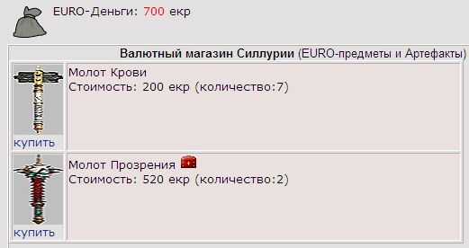
При нажатии на ссылку "купить" мы передаем нашему
скрипту два важных параметра
&itemtype
и &item,
для того чтоб создать в рюкзаке у покупателя вещь на основе информации из
справочника. Собственно процесс покупки реализуем так:
if ($iBuy){ // Была
инициирована покупка
// Сколько вещей этого типа?
$query = "SELECT
s.EUR_ID,s.QTY,il.Item_StateCost,il.ItemName,il.ItemType,il.ItemNo FROM
euroshop s inner join Items_List il on s.IL_ID=il.IL_ID WHERE il.IL_ID =
'$aItem'";
$result = mysql_query($query) or
die("Query failed : " .
mysql_error());
$aRow = mysql_fetch_array( $result);
$aEURID = $aRow["EUR_ID"];
$aQTY = $aRow["QTY"];
$aStateCost = $aRow["Item_StateCost"];
$aItemName = $aRow["ItemName"];
if ($aQTY-- > -1){ //
есть ли вообще эти вещи?
$lNoMoney=false;
if ($aMoney >= $aStateCost){
// хватит ли денег купить вещь?
$aMoney = $aMoney - $aStateCost;
// Засунем в рюкзак купленную вещь!
$query = "INSERT INTO items(IL_ID,Item_Owner,Item_Position,Item_CurrentLife)";
$query .= "Values ('$aItem','$aUserID','2','0')";
$result = mysql_query($query,$link) or
die("Query failed : " .
mysql_error());
// Уменьшим деньги
$query = "UPDATE users SET Character_Euro='$aMoney'
WHERE Nick_Name='$aNickName'";
$result = mysql_query($query) or
die("Query failed : " .
mysql_error());
// Уменьшим кол-во предметов в магазине
$query = "UPDATE euroshop SET QTY='$aQTY' WHERE
EUR_ID='$aEURID'";
$result = mysql_query($query) or
die("Query failed : " .
mysql_error());
}else
{
$lNoMoney=true;
}
}
} |
Тут все
стандартно. Единственное, покупка осуществляется за екр, а не за обычные деньги,
поэтому переменная $aMoney
это:
| $aMoney = $aRow["Character_Euro"]; |
14.3.
Банк,
открытие счетов.
Для того, чтоб еврокредиты появились в наличном обороте, они
вначале помещаются на валютном счете игрового персонажа. К примеру, игрок решил
купить еврокредиты и перевел деньги на счет онлайн игры (или одного из дилеров
игры) через систему
WebMoney или Яндекс.Деньги.
Ответственный работник сервиса поместил эквивалент этих денег
на евро-счет игрока и тот может отправляться в валютный магазин за товарами.
Давайте расположим здание банка также на западной части
Центральной Площади. Картинка банка будет выглядеть так:
Вот как выглядит его описание на
HTML в файле
map2.phtml:
| <div style="position:absolute;left:120px;top:250px;width:149px;
height:136px; z-index:12;z-index:12"><IMG SRC=Items/Towns/Silluria/bank.gif
CLASS=aFilter onmouseover="imover(this)" onmouseout="imout(this)"
onclick="gotoBank()" ALT="Банк"
width="106" height="73"></div> |
Теперь наступила очередь создать
файл bank.phtml, который будет отображаться при
нажатии на картинку банка и выполнения функции JavaScript
gotoBank.
Но
для начала нам не помешает таблица счетов, в которой будет содержать
информация по валютным и обычным счетам игровых персонажей.
Вот эта таблица:
/* Таблица банковских счетов */
CREATE TABLE `accounts`(
`ACC_ID` BIGINT(20) unsigned NOT NULL auto_increment,
/* ID - номер счета*/
`USER_ID` bigint(20) unsigned NOT NULL, /* ID
игрока */
`ACC_Pass` CHAR(32), /* пароль ко счету */
`DateOpen` TIMESTAMP NOT NULL, /* дата открытия
счета */
`Money_KR` INT NOT NULL default 0, /*
внутриигровые деньги */
`Money_EKR` INT NOT NULL default 0, /*
внутриигровая валюта - для покупок в валютном магазине */
`Notes` BLOB, /* Записи */
PRIMARY KEY (`ACC_ID`)
) TYPE=MyISAM; |
Вы можете в
качестве домашнего задания сделать сразу открытие нового счета для персонажа,
регистрирующегося в игре, а мы пока что просто добавим
два счета для игроков Defender (user_id=2)
и Stranger (user_id=3)
INSERT INTO accounts
(ACC_ID,USER_ID,ACC_Pass,DateOpen,Money_KR,Money_EKR) values (10023,2,'1234','2008-08-29
10:00',50,100);
INSERT INTO accounts (ACC_ID,USER_ID,ACC_Pass,DateOpen,Money_KR,Money_EKR)
values (10024,3,'1234','2008-08-29
10:00',100,20); |
Давайте, по умолчанию сделаем режим входа в режим
управления счетом для игрока при первом входу в банк. Реализуем это таким
образом:
<?php
if($lBankMode == 0){
?>
Мы предоставляем следующие услуги:
<OL>
<LI>Открытие счета<LI>Возможность положить/снять кредиты/еврокредиты со
счета
<LI>Перевести кредиты/еврокредиты с одного счета на другой
<LI>Обменный пункт. Обмен еврокредитов на кредиты
</OL>
<FORM action="bank.phtml?newacc=1" name=accnew method=POST">
Хотите открыть свой счет? Услуга платная: 3.00 кр.</B> <INPUT
TYPE=button value="Открыть счет" name=open onClick="OpenAcc()">
<INPUT TYPE=hidden value="<?php echo $aNickName; ?>" name=NickName></td>
<INPUT TYPE=hidden value="" name=newacc></td>
</FORM>
<TABLE><TR><FORM action="bank.phtml" name=accopen method=POST onSubmit="feedbackAccOpen()"><TD>
<FIELDSET><LEGEND><B>Управление счетом</B> </LEGEND>
<TABLE>
<TR><TD valign=top>
<TABLE>
<TR><TD>Номер счета</td> <TD colspan=2><select
name="num" size=0 style="width: 90px">
<?php
// Узнаем какие счета открыты у игрока
$query = "SELECT ACC_ID from accounts WHERE
USER_ID='$aUserID'";
$result = mysql_query($query) or
die("Query failed : " .
mysql_error());
while ($aRow =
mysql_fetch_array($result)) {
print('<option value="'.$aRow["ACC_ID"].'">'.$aRow["ACC_ID"].'</option>');
}
?>
</select></td></tr>
<TR><TD>Пароль</td><td> <INPUT style='width:90;' type=password value=""
name=psw></td><TD style='padding: 0, 0, 3, 5'></TD></tr>
<TR><TD colspan=3 align=center><INPUT TYPE=button value="Войти"
name=enter onClick="feedbackAccOpen()"></td>
<INPUT TYPE=hidden value="<?php echo
$aNickName; ?>" name=NickName></td>
</tr>
</TABLE>
</TD>
<TD></TD></TR>
</TABLE>
</FIELDSET>
</TD></TR></TABLE>
<br><br>
</FORM> |
Итак, вышеприведенный фрагмент содержит в себе две
HTML формы.
Первая (name=accnew)
будет позволять открыть для игрока новый счет, вторая (name=accopen)
даст возможность войти в существующий у пользователя счет, выбрав его из списка
имеющихся и введя пароль. Список имеющихся у пользователя счетов мы создаем
динамически на PHP, делая запрос к таблице
accounts.
Внешне наша страница выглядит так:
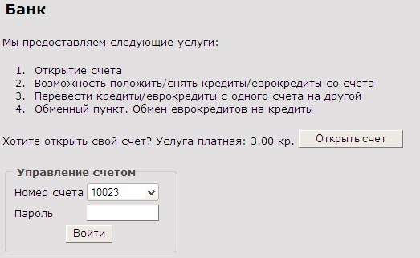
При нажатии на кнопку "Открыть счет" игрок заставляет выполниться
JavaScript функцию
OpenAcc,
код которой выглядит следующим образом:
function
OpenAcc(){
if( confirm('Хотите открыть счет за 3 кр ?') ){
document.getElementById('newacc').value = 1;
document.accnew.submit();
}
} |
Функция устанавливает скрытый (TYPE=hidden)
элемент формы в единицу и выполняет операцию submit
формы. На стороне скрипта в файле bank.phtml происходит
следующее:
// Открываем новый счет
if ( !empty($_GET['newacc'])
){
$query = "INSERT INTO
accounts(USER_ID,ACC_Pass,DateOpen) values ($aUserID,'1111',Now())";
$result = mysql_query($query) or
die("Query failed : " .
mysql_error());
$aNewAcc = mysql_insert_id();
printf ("<font color=red>Вы удачно открыли
новый счет %d\n. Новому счету назначен временный пароль 1111. </font>",
$aNewAcc);
} |
Если параметр
newacc
установлен, значит игрок инициировал открытие счета и мы создаем
ему счет с очередным порядковым номером и паролем 1111, который он может
поменять (это мы сделаем чуть позже)
Давайте сделаем вход в режим управления счетом, при вводе
пароля к уже имеющемуся счету. Давайте зайдем, к примеру игроком
Defender
у которого открыт счет 10023 с паролем 1234. При нажатии кнопки "Войти"
срабатывает функция
feedbackAccOpen,
которая на
JavaScript
выглядит так:
function
feedbackAccOpen(){
if (document.accopen.psw.value=="") {
alert("Вы не ввели пароль ко счету!");
document.accopen.psw.focus();
return false;
}
document.accopen.submit();
} |
При
входе в режим отображения информации по счету, мы принимаем данные о номере
счета и пароле к нему методом POST следующим образом:
// Пытаемся войти с паролем в счет
if (!empty($_POST['num'])
&& !empty($_POST['psw'])){
$aAccNum = $_POST['num'];
$aPsw = $_POST['psw'];
checkAccInfo();
} |
Функция
checkAccInfo
считывает данные о
счете игрока, если был введен правильный пароль:
function checkAccInfo(
){
global $aAccMoneyKR, $aAccMoneyEKR, $lBankMode, $aUserID, $aPsw, $aAccNum,
$aNotes;
// найдем, есть ли такой счет с паролем у этого
персонажа
$query = "select
ACC_ID,Money_KR,Money_EKR,Notes from accounts where USER_ID='$aUserID'
and ACC_Pass='$aPsw' and ACC_ID='$aAccNum'";
$result = mysql_query($query) or
die("Query failed : " .
mysql_error());
if( mysql_num_rows($result)
<> 0 ){
$aRow = mysql_fetch_array($result);
$aAccMoneyKR = $aRow["Money_KR"];
$aAccMoneyEKR = $aRow["Money_EKR"];
$aNotes = $aRow["Notes"];
$lBankMode = 1;
} else {
print("<font size=2 color=red>Вы ввели
неверный пароль к счету $aAccNum !</font>");
}
} |
В браузере пользователь увидит следующую картинку:
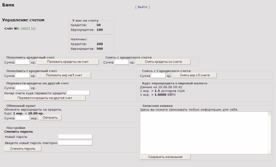
Чтоб увидеть эту картинку в полном масштабе, нажмите
здесь.
14.4.
Банковские услуги обмена
Как Вы могли заметить, находясь в режиме управления счетом, игрок
может проводить несколько основных денежных операций:
1. Пополнить кредитный счет - это операция нужна для перевода наличных денег на
собственный счет в банке (обычно это нужно для дальнейшего перевода денег на
счет другого игрока)
2. Снять с кредитного счета - эта операция заключается в переводе денег со счета
на наличные деньги игрока в обычной игровой валюте.
3. Пополнить евро-кредитный счет - это операция нужна для перевода наличных
денег в екр на собственный счет в банке.
4. Снять с евро-кредитного счета - эта операция заключается в переводе екр со
счета на наличные екр-деньги игрока (обычно для нанесения визита в валютный
магазин за ЕВРО-вещами и артефактами).
Информация по текущим остаткам выводится в верхней части
экрана управления счетом:
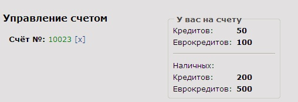
Рассмотрим пополнение кредитного счета:
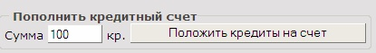
Описание на HTML
выглядит так:
<TD valign=top width=50%><FIELDSET><LEGEND><B>Пополнить кредитный счет</B>
</LEGEND>
Сумма <INPUT TYPE=text NAME=add_sum size=6 maxlength=10> кр. <INPUT TYPE=button
name=add_kredit value="Положить кредиты на счет"
onclick="f_add_kred()"><BR> |
При вводе необходимой
суммы и нажатии на кнопку "Положить кредиты на счет" срабатывает
JavaScript функция
f_add_kred,
описание которой смотрите ниже:
function f_add_kred(){
if (isNaN(parseFloat(document.bankactions.add_sum.value))) {
alert('Укажите сумму');
return false;
} else {
if( confirm('Вы хотите положить на свой счет '+parseFloat(document.bankactions.add_sum.value)+'
кр. ?') ){
document.getElementById('operation').value = 1;
document.bankactions.submit();
}
}
} |
Функция проверяет
корректность ввода суммы и устанавливает скрытое поле
operation в единицу. Затем происходит
операция submit формы
bankactions.
На стороне скрипта, для пополнения нашего счета в обычной
валюте мы делаем следующее:
if ( !empty($_POST['operation'])
){
$aOperation = $_POST['operation'];
// положить наличные на кр счет
if ($aOperation==1) {
$aSumm = $_POST['add_sum'];
if ($aSumm <= $aMoney){
// Уменьшим наличные деньги
$query = "UPDATE users SET Character_Money=Character_Money-'$aSumm'
WHERE Nick_Name='$aNickName'";
$result = mysql_query($query) or
die("Query failed : " .
mysql_error());
// Пополним банковский счет кредитов
$query = "UPDATE accounts SET Money_KR=Money_KR+'$aSumm'
WHERE ACC_ID='$aAccNum' and USER_ID='$aUserID'";
$result = mysql_query($query) or
die("Query failed : " .
mysql_error());
getPlayerInfo();
checkAccInfo();
} else {
print("<font size=2 color=red>У вас
недостаточно наличных денег!</font>");
}
} |
Тут все очень просто! Отнимаем от нашей
суммы наличных денег из таблицы users и кладем
на счет в таблице accounts.
Видим как изменяется суммы на нашем счету и в кошельке:
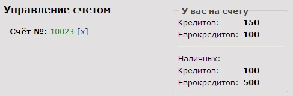
Операция по снятию
некоторой суммы денег со счета выполняется в обратном порядке:
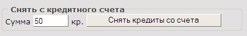
// снять наличные с кр счета
if ($aOperation==2) {
$aSumm = $_POST['get_sum'];
if ($aSumm <= $aAccMoneyKR){
// Увеличим наличные деньги
$query = "UPDATE users SET Character_Money=Character_Money+'$aSumm'
WHERE Nick_Name='$aNickName'";
$result = mysql_query($query) or
die("Query failed : " .
mysql_error());
// Уменьшим банковский счет кредитов
$query = "UPDATE accounts SET Money_KR=Money_KR-'$aSumm'
WHERE ACC_ID='$aAccNum' and USER_ID='$aUserID'";
$result = mysql_query($query) or
die("Query failed : " .
mysql_error());
getPlayerInfo();
checkAccInfo();
} else {
print("<font size=2 color=red>У Вас
недостаточно денег на кредитном счете!</font>");
}
} |
Если сумма снятия не превышает суммы
обычных денег на счету игрока, то мы добавляем ее к наличным деньгам и
соответственно уменьшаем количество денег на счете.
Для екр счетов все тоже
самое:
Пополнение
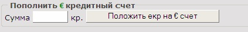
и снятие:
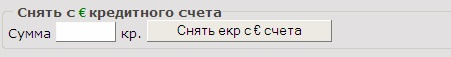
14.5.
Другие
услуги банка.
Иногда возникает необходимость помочь какому-то игроку материально
и поэтому в режиму управления счетом есть необходимость перевести денежные
средства на счет другого персонажа. Впрочем также можно и перемещать деньги
между разными счетами одного и того же игрока.
Следующий интерфейс режима управления счетом, как раз и реализует передачу
денежных средств на другой счет:

На HTML эта форма описывается так:
<TD valign=top><FIELDSET><LEGEND><B>Перевести
кредиты на другой счет</B> </LEGEND>
Сумма <INPUT TYPE=text NAME=tansfer_sum size=6 maxlength=10> кр.<BR>
Номер счета куда перевести кредиты <INPUT TYPE=text NAME=num2 size=12
maxlength=15><BR>
<INPUT TYPE=button name=transfer_kredit value="Перевести кредиты на
другой счет" onclick="transfer_kr()"><BR>
</FIELDSET></TD> |
При вводе
необходимой суммы и номера счета и нажатии на кнопку "Перевести кредиты на
другой счет" срабатывает
JavaScript функция
transfer_kr,
описание которой смотрите далее:
function transfer_kr(){
if (isNaN(parseFloat(document.bankactions.tansfer_sum.value)) ||
isNaN(parseInt(document.bankactions.num2.value)) ) {
alert('Укажите сумму и номер счета'); return false;
} else {
if( confirm('Вы хотите перевести со своего счета '+parseFloat(document.bankactions.tansfer_sum.value)+'
кр. на счет номер '+parseInt(document.bankactions.num2.value)+' ?') ){
document.getElementById('operation').value = 5;
document.bankactions.submit();
}
}
} |
В
нашем PHP скрипте bank.phtml куда
передается управление из вышеописанной функции мы делаем осуществляем перевод
денег:
// перевод кредитов на другой счет
if ($aOperation==5) {
$aSumm = $_POST['tansfer_sum'];
$aNum2 = $_POST['num2'];
// найдем, есть ли такой счет куда переводить
кредиты
$query = "select ACC_ID,Money_KR,Money_EKR from
accounts where ACC_ID='$aNum2'";
$result = mysql_query($query) or
die("Query failed : " .
mysql_error());
if( mysql_num_rows($result)
<> 0 ){
$aRow = mysql_fetch_array($result);
$aAccMoneyKR = $aRow["Money_KR"];
$lBankMode = 1;
checkAccInfo();
if ($aSumm <= $aAccMoneyKR){
// Уменьшим наш банковский
счет кредитов
$query = "UPDATE accounts SET Money_KR=Money_KR-'$aSumm'
WHERE ACC_ID='$aAccNum' and USER_ID='$aUserID'";
$result = mysql_query($query) or
die("Query failed : " .
mysql_error());
// Добавим на другой
$query = "UPDATE accounts SET Money_KR=Money_KR+'$aSumm'
WHERE ACC_ID='$aNum2'";
$result = mysql_query($query) or
die("Query failed : " .
mysql_error());
print("<font size=2 color=red>Вы удачно
перевели $aSumm кр на счет $aNum2!</font>");
getPlayerInfo();
checkAccInfo();
} else {
print("<font size=2 color=red>У Вас
недостаточно денег для перевода!</font>");
}
} else {
print("<font size=2 color=red>Такой номер
счета не найден!</font>");
}
} |
Здесь мы определяем, существует ли такой счет, которые мы указали в форме
перевода денег и наличие у нас необходимой для осуществления перевода средств.
Затем уменьшаем количество денег на нашем кредитном счете и увеличиваем у того,
кому переводим денежные средства.
Кроме перевода у нас также еще есть возможность обмена
введенных в игру еврокредитов на обычные кредиты (екр на кр). Следующий
интерфейс позволяет сделать этот обмен:
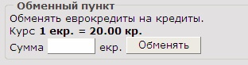
На HTML эта форма описывается так:
<FIELDSET><LEGEND><B>Обменный пункт</B>
</LEGEND>
Обменять еврокредиты на кредиты.<BR>
Курс <B>1 екр.</B> = <B>20.00 кр.</B><BR>
Сумма <INPUT TYPE=text NAME=convert_sum size=6 maxlength=10> екр.
<INPUT TYPE=button name=convert_ekredit value="Обменять" onclick="exChange()">
</FIELDSET> |
После ввода нужной суммы и нажатия кнопки "Обменять"
функция exChange,
передает необходимые параметры в скрипт bank.html и там
выполняются действия по обмену денежных средств, с помощью следующего PHP
кода:
// обмен еврокредитов на
кредиты
if ($aOperation==6) {
$aSumm = $_POST['convert_sum'];
if ($aSumm <= $aAccMoneyEKR){
// Изменим суммы на кредитном и еврокредитном
счете
$query = "UPDATE accounts SET Money_EKR=Money_EKR-'$aSumm',
Money_KR=Money_KR+('$aSumm'*20) WHERE ACC_ID='$aAccNum' and USER_ID='$aUserID'";
$result = mysql_query($query) or
die("Query failed : " .
mysql_error());
print("<font size=2 color=red>Вы удачно
обменяли $aSumm екр на ".($aSumm*20)." кр!</font>");
getPlayerInfo();
checkAccInfo();
} else {
print("<font size=2 color=red>У Вас
недостаточно денег на € кредитном счете!</font>");
}
} |
Здесь мы определяем доступность еврокредитных средств на счете и после этого
уменьшаем кол-во екр на счете, на выбранную при обмене сумму и соответственно
увеличиваем кредитную часть счета в соответствии с курсом обмена.
Для надежности, мы может также предложить игрокам
периодически сменять пароль к своим банковским счетам. Создадим следующий
простой интерфейс для смены пароля к счету:
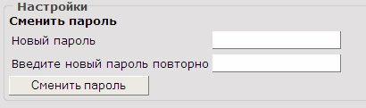
На HTML эта форма
описывается так:
<FIELDSET><LEGEND><B>Настройки</B> </LEGEND>
<B>Сменить пароль</B><BR>
<table id="table1">
<tr><TD>Новый пароль</TD><TD><INPUT TYPE=password name=new_psw></TD><TD></TD></tr>
<tr><TD>Введите новый пароль повторно</TD><TD><INPUT TYPE=password
name=new_psw2></TD><TD></TD></tr>
</table>
<INPUT TYPE=button name=change_psw value="Сменить пароль" onClick="ChangePass()"><BR>
</FIELDSET> |
При
вводе нового пароля два раза инажатии на кнопку "Сменить пароль" срабатывает
JavaScript функция
ChangePass,
описание которой смотрите ниже:
function ChangePass(){
if ( document.bankactions.new_psw.value == "" ||
document.bankactions.new_psw2.value == "" ) {
alert('Введите дважды новый пароль для счета!'); return false;
} else {
if ( document.bankactions.new_psw.value ==
document.bankactions.new_psw2.value ) {
if( confirm('Вы действительно хотите сменить пароль для счета?') ){
document.getElementById('operation').value = 7;
document.bankactions.submit();
}
}
}
} |
Функция проверяет
заполнение обоих полей и идентичность введения обоих паролей и выполняет
submit формы, перед этим установив флаг
operation
в значение 7. На стороне скрипта мы
выполняем следующие простые действия:
// Смена пароля
if ($aOperation==7) {
$aNewPsw = $_POST['new_psw'];
// Изменим пароль к счету
$query = "UPDATE accounts SET ACC_Pass = '$aNewPsw'
WHERE ACC_ID='$aAccNum' and USER_ID='$aUserID'";
$result = mysql_query($query) or
die("Query failed : " .
mysql_error());
print("<font size=2 color=red>Пароль удачно
сменен! (запомните его: $aNewPsw )</font>");
} |
И последнее -
добавим записную книжку, чтоб игрок записывал необходимые действия со счетом
(кому что перечислил, когда произвел какие обменные операции и т.д.) Это будет
обычное поле TEXTAREA.
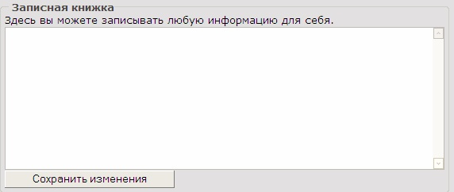
При
нажатии на кнопку "Сохранить изменения" на стороне скрипта выполняется такой
код:
// Сохранение записной книжки
if ($aOperation==8) {
$aNotes = $_POST['notepad'];
// Изменим данные в записной книжке
$query = "UPDATE accounts SET Notes = '$aNotes'
WHERE ACC_ID='$aAccNum' and USER_ID='$aUserID'";
$result = mysql_query($query) or
die("Query failed : " .
mysql_error());
print("<font size=2 color=red>Запись
сохранена! </font>");
} |
Поле
Notes
в таблице accounts
у нас является типом BLOB, так что
пользователь может ввести достаточно много текстовой информации.
Полный текст файла bank.phtml вы можете найти
здесь.
В следующем завершающем уроке мы познакомимся со стражами порядка в
бойцовском клубе - паладинами и их возможными действиями в отношении других
игроков, нарушающими законы клуба Might and Magic.
|
|
{kind=link}